-
Naruto #001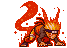
- Uzumaki
- Aldeia da Folha
Naruto nasceu com uma besta dentro de si, a besta de 9 caldas. Portanto ele carrega o poder da besta com sigo. Ele foio 7° Hokage
-
Sassuke #002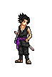
- Uchiha
- Aldeia da Folha
Sasuke tem o poderoso sharingan, um olho com poder especial. Sassuke se culpa e culpa seu irmão pela dizimação do seu clã.
-
Kakashi #003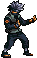
- Hatake
- Aldeia da Folha
Kakashi herda o sharingan do seu melhor amigo "Obito". Ele também fez parte da organização Ambu. Ele foi o 6° Hoakge
-
Itachi #004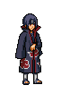
- Uchiha
- Aldeia da Folha
Ele se tornou um criminoso internacional depois de assassinar seu clã inteiro, poupando apenas a vida de seu irmão mais novo, Sasuke. Mangekyou Sharingan é um de seus melhores poderes oculares.
-
Tsunade #005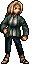
- Senju
- Aldeia da Folha
Tsunade é uma dos Sannin Lendários de Konohagakure. Embora seja considerada a kunoichi mais forte do mundo e a maior ninja médica. Ela foi 5° Hokage
-
Neji #006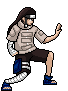
- Hyuuga
- Aldeia da Folha
Embora tenha sido um prodígio mesmo pelos padrões dos Hyuuga, Neji era um membro da casa secundária, por isso, não importa quão habilidoso tornou-se, ele estaria sempre a serviço da casa principal Hyuuga,
-
Deidara #007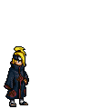
- Akatsuki
- Aldeia da pedra
Deidara foi um ninja renegado de rank S. Ele também foi um dos mais jovens membros da Akatsuki, e foi um parceiro de Sasori e Tobi consecutivamente antes de sua morte.
-
Kiba #008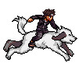
- Inuzuka
- Aldeia da Folha
Kiba Inuzuka é um membro do clã Inuzuka de Konohagakure. Tanto ele quanto seu companheiro canino, Akamaru, são membros do Time Kurenai.
-
Sasori #009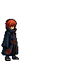
- Akatsuki
- Vila da Areia
Sasori, também conhecido como Sasori da Areia Vermelha, era um shinobi de Sunagakure e que se juntou a Akatsuki, onde foi parceiro de Orochimaru e Deidara, respectivamente.
-
Jiraiya #010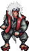
- Sem clâ
- Vila da Areia
Jiraiya foi um dos Sannin Lendários, junto com Tsunade e Orochimaru, treinados por Hiruzen Sarutobi. Ele era um auto-proclamado super-pervertido, e o escritor da popular série de livros de ficção para adultos, chamado Icha Icha. Ele também era conhecido como o Eremita dos Sapos.
-
Kankuru #011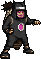
- Kazekage
- Vila da Areia
Ele tem grandes habilidades em tanto modificar como controlar marionetes, e é fisicamente forte o suficiente para transportar cerca de duas marionetes em suas costas. Ele é um dos 3 irmões da areia junto com Gaara e Temari
-
Temari #012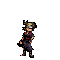
- Nara
- Vila da Areia
Temari Nara, é uma antiga kunoichi do clã dos Kazekage e emissária de Sunagakure. Depois de se casar com Shikamaru Nara, ela se torna membro do clã Nara e migra para Konohagakure, onde trabalha como kunoichi para a aldeia.